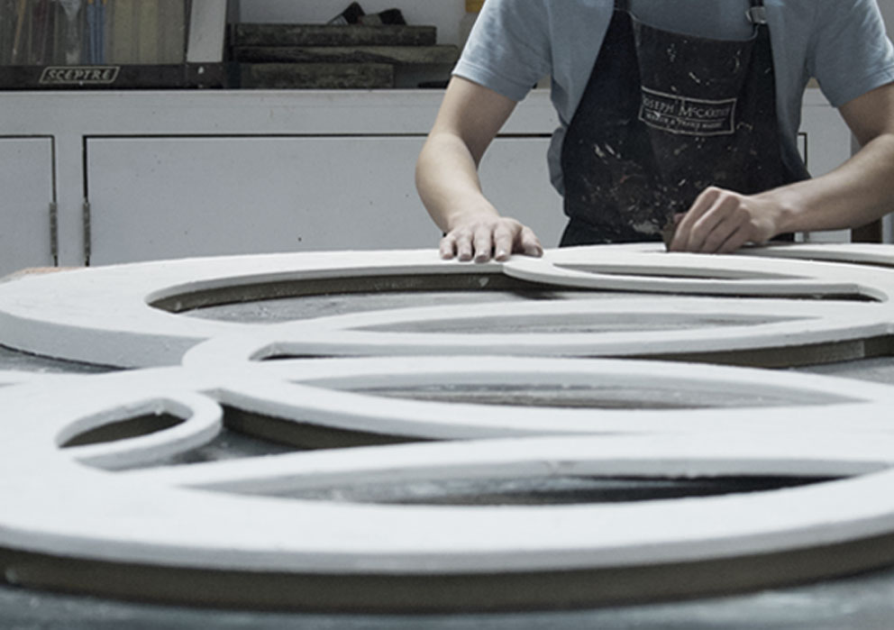
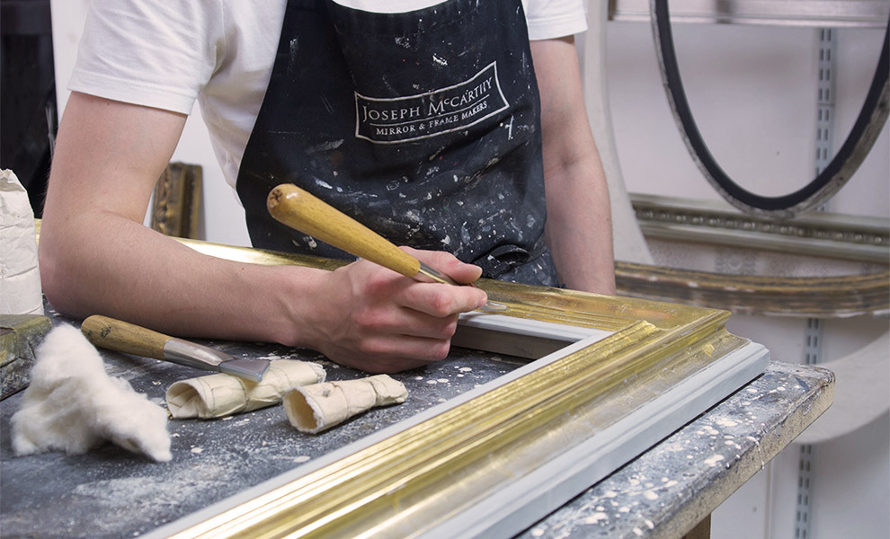
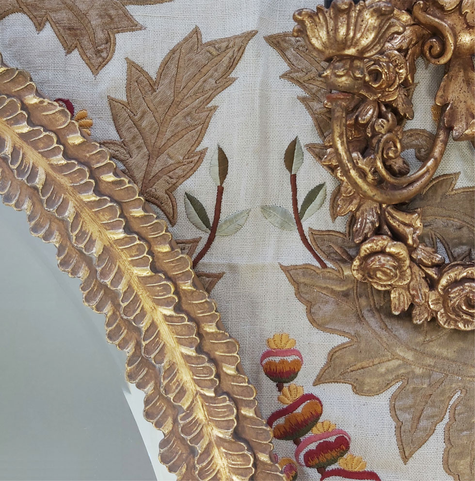
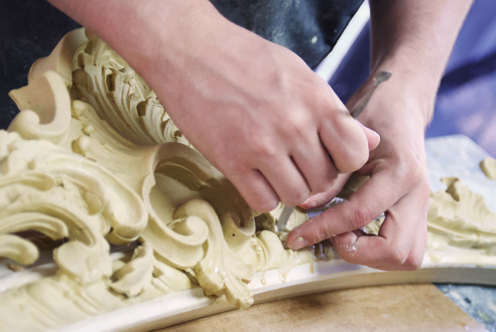
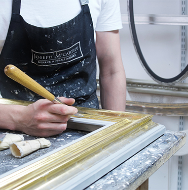
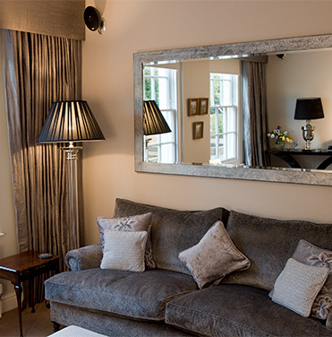

CRAFTSMANSHIP
Our clients recognise and value the benefits of our craftsmanship
From conception to completion, every piece is designed and handcrafted offering a unique breadth of choice and
personalisation
Time honoured skills and creative innovation are at the heart of what we do.
EACH FRAME HANDMADE AND INDIVISUAL
A mirror designed and created by the skilled team at Joseph McCarthy is an investment in quality. Each frame is
created in our Tunbridge Wells workshop with great attention to detail. We oversee each stage of production to give
you confidence that your piece will be made with the same superior level of expertise, quality and care at every
step of the process.


We are proud of our long history. Our talented team of highly trained craftsmen includes specialist frame makers,
gilders and finishers. We share a passion for time honoured skills and artistry and strive for excellence in the
work we produce.
We understand that our clients come to us because they appreciate the difference in handcrafted quality, a subtlety
of finish, and ultimately want something unique and special.
A Commitment to Master Craftsmanship
"I am absolutely thrilled with both of the mirrors they are truly beautiful and works of art. I
cannot thank you and your team enough for the workmanship which has gone into them."
- F.G Sevenoaks, Kent
Every setting has its own requirements, subtle adjustments to the size and finish can completely transform the look
and feel of your mirror taking it from acceptable to exceptional.

CUSTOMISABLE IN EVERY DETAIL
You have the opportunity to make changes to the size and finish of any of our designs to give you complete
flexibility according to your needs. We are happy to guide you in this process.
BROWSE OUR DESIGN

OF ‘NATIONAL IMPORTANCE TO THE HISTORY OF FRAME MAKING IN BRITIAN’ - TATE
We are the proud owners of 'The Bloomsbury Collection', our extensive collection of over 3000 original period
carvings which we use to create the exquisite decoration and patterns on our ornamented frames.
These historic carvings, some dating as far back as 1760, provide a wealth of authentic options for our bespoke
frame projects and are used in creating both traditional and contemporary designs.
FIND OUT MORE
HELP & ADVICE


BESPOKE DESIGN SERVICE
WHY CHOOSE US
LATEST PROJECTS